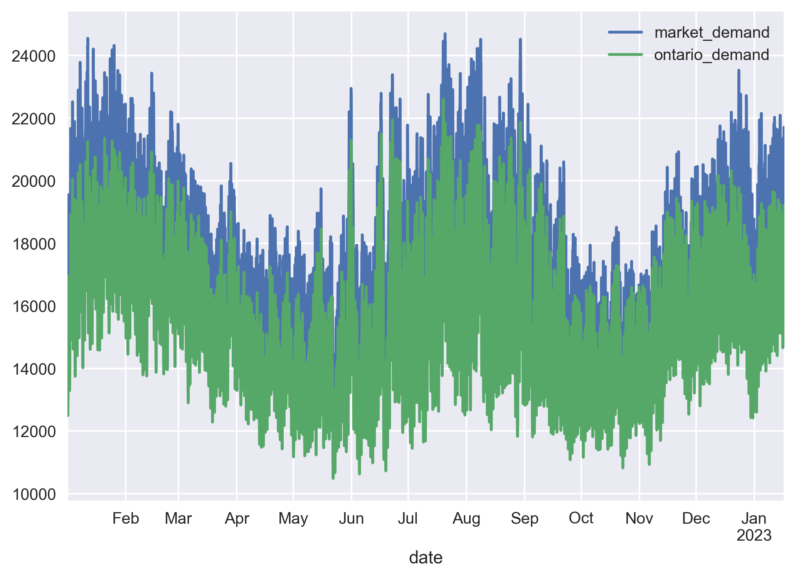
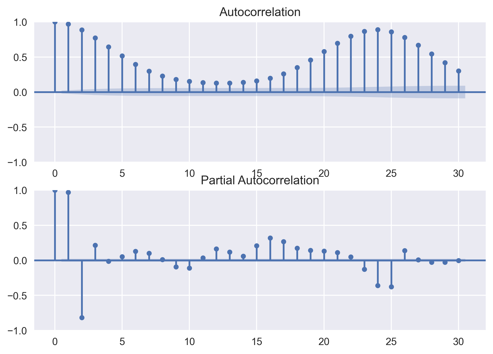
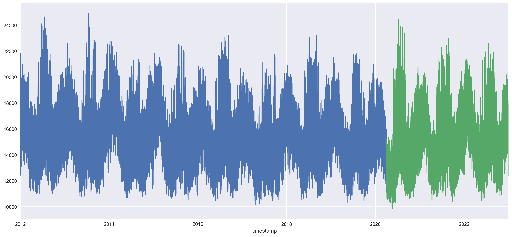
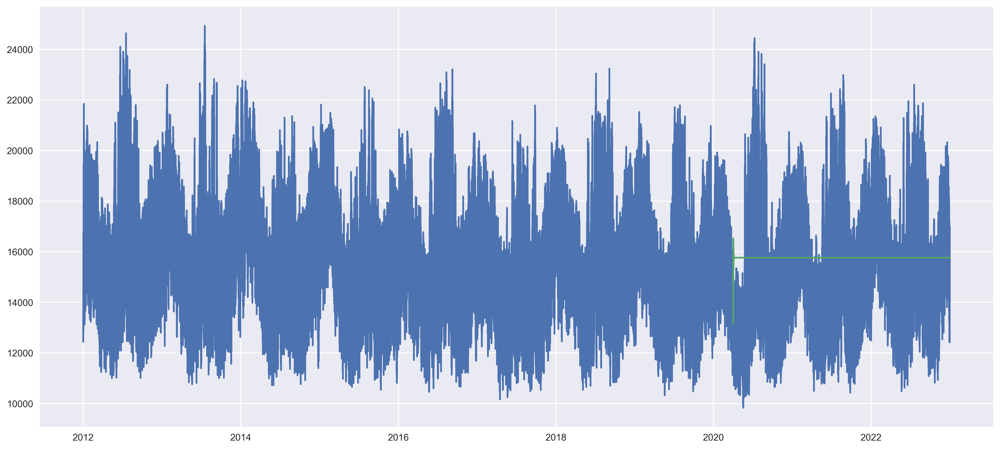

ARMA
ARMA#
import numpy as np
import pandas as pd
import matplotlib.pyplot as plt
import matplotlib as mpl
mpl.rcParams['figure.dpi'] = 300
from pylab import rcParams
import seaborn as sns
import statsmodels.api as sm
from statsmodels.graphics.tsaplots import plot_acf
from statsmodels.graphics.tsaplots import plot_pacf
from statsmodels.tsa.seasonal import seasonal_decompose
from statsmodels.tsa.ar_model import AR
from statsmodels.tsa.arima_model import ARMA, ARIMA
from statsmodels.tsa.statespace.sarimax import SARIMAX
import scipy.stats as stats
from pmdarima import auto_arima
import datetime
palettename = "ch:start=.2,rot=-.3"
palette = sns.color_palette(palettename, 10)
palette = palette.as_hex()
sns.set_palette(palette.reverse())
col1 = palette[8]
col2 = palette[5]
col3 = palette[2]
cols = [col1, col2, col3]
palette
price_2022 = pd.read_csv('../Data/hourly_data_2022.csv')
price_2023 = pd.read_csv('../Data/hourly_data_2023.csv')
price = pd.concat([price_2022,price_2023]).reset_index().drop(columns={'index'})
price.head()
---------------------------------------------------------------------------
FileNotFoundError Traceback (most recent call last)
Cell In[2], line 1
----> 1 price_2022 = pd.read_csv('../Data/hourly_data_2022.csv')
2 price_2023 = pd.read_csv('../Data/hourly_data_2023.csv')
3 price = pd.concat([price_2022,price_2023]).reset_index().drop(columns={'index'})
File ~/venv/lib/python3.9/site-packages/pandas/util/_decorators.py:211, in deprecate_kwarg.<locals>._deprecate_kwarg.<locals>.wrapper(*args, **kwargs)
209 else:
210 kwargs[new_arg_name] = new_arg_value
--> 211 return func(*args, **kwargs)
File ~/venv/lib/python3.9/site-packages/pandas/util/_decorators.py:331, in deprecate_nonkeyword_arguments.<locals>.decorate.<locals>.wrapper(*args, **kwargs)
325 if len(args) > num_allow_args:
326 warnings.warn(
327 msg.format(arguments=_format_argument_list(allow_args)),
328 FutureWarning,
329 stacklevel=find_stack_level(),
330 )
--> 331 return func(*args, **kwargs)
File ~/venv/lib/python3.9/site-packages/pandas/io/parsers/readers.py:950, in read_csv(filepath_or_buffer, sep, delimiter, header, names, index_col, usecols, squeeze, prefix, mangle_dupe_cols, dtype, engine, converters, true_values, false_values, skipinitialspace, skiprows, skipfooter, nrows, na_values, keep_default_na, na_filter, verbose, skip_blank_lines, parse_dates, infer_datetime_format, keep_date_col, date_parser, dayfirst, cache_dates, iterator, chunksize, compression, thousands, decimal, lineterminator, quotechar, quoting, doublequote, escapechar, comment, encoding, encoding_errors, dialect, error_bad_lines, warn_bad_lines, on_bad_lines, delim_whitespace, low_memory, memory_map, float_precision, storage_options)
935 kwds_defaults = _refine_defaults_read(
936 dialect,
937 delimiter,
(...)
946 defaults={"delimiter": ","},
947 )
948 kwds.update(kwds_defaults)
--> 950 return _read(filepath_or_buffer, kwds)
File ~/venv/lib/python3.9/site-packages/pandas/io/parsers/readers.py:605, in _read(filepath_or_buffer, kwds)
602 _validate_names(kwds.get("names", None))
604 # Create the parser.
--> 605 parser = TextFileReader(filepath_or_buffer, **kwds)
607 if chunksize or iterator:
608 return parser
File ~/venv/lib/python3.9/site-packages/pandas/io/parsers/readers.py:1442, in TextFileReader.__init__(self, f, engine, **kwds)
1439 self.options["has_index_names"] = kwds["has_index_names"]
1441 self.handles: IOHandles | None = None
-> 1442 self._engine = self._make_engine(f, self.engine)
File ~/venv/lib/python3.9/site-packages/pandas/io/parsers/readers.py:1735, in TextFileReader._make_engine(self, f, engine)
1733 if "b" not in mode:
1734 mode += "b"
-> 1735 self.handles = get_handle(
1736 f,
1737 mode,
1738 encoding=self.options.get("encoding", None),
1739 compression=self.options.get("compression", None),
1740 memory_map=self.options.get("memory_map", False),
1741 is_text=is_text,
1742 errors=self.options.get("encoding_errors", "strict"),
1743 storage_options=self.options.get("storage_options", None),
1744 )
1745 assert self.handles is not None
1746 f = self.handles.handle
File ~/venv/lib/python3.9/site-packages/pandas/io/common.py:856, in get_handle(path_or_buf, mode, encoding, compression, memory_map, is_text, errors, storage_options)
851 elif isinstance(handle, str):
852 # Check whether the filename is to be opened in binary mode.
853 # Binary mode does not support 'encoding' and 'newline'.
854 if ioargs.encoding and "b" not in ioargs.mode:
855 # Encoding
--> 856 handle = open(
857 handle,
858 ioargs.mode,
859 encoding=ioargs.encoding,
860 errors=errors,
861 newline="",
862 )
863 else:
864 # Binary mode
865 handle = open(handle, ioargs.mode)
FileNotFoundError: [Errno 2] No such file or directory: '../Data/hourly_data_2022.csv'
demand_2022 = pd.read_csv('../Data/PUB_Demand_2022.csv')
demand_2023 = pd.read_csv('../Data/PUB_Demand_2023.csv')
demand = pd.concat([demand_2022,demand_2023]).reset_index().drop(columns={'index'})
demand.head()
| Date | Hour | Market Demand | Ontario Demand | |
|---|---|---|---|---|
| 0 | 2022-01-01 | 1 | 15150 | 13543 |
| 1 | 2022-01-01 | 2 | 15344 | 13254 |
| 2 | 2022-01-01 | 3 | 14686 | 12683 |
| 3 | 2022-01-01 | 4 | 14400 | 12491 |
| 4 | 2022-01-01 | 5 | 14043 | 12493 |
df = pd.merge(price,demand,on=['Date','Hour'],how = 'left')
df = df[['Date','Hour','HOEP','Hour 1 Predispatch','Hour 2 Predispatch','Hour 3 Predispatch','Market Demand','Ontario Demand']]
date=pd.to_datetime(df['Date'])
hour=df['Hour']
hour = hour.replace(24,0)
hour=hour.apply(lambda x: datetime.time(x,0))
dt=date.apply(lambda x: str(x.date()))+' '+hour.apply(lambda x: str(x))
dt = pd.to_datetime(dt)
def adjusthour(x):
if x.hour == 0:
return x + datetime.timedelta(days=1)
else:
return x
dt = dt.apply(adjusthour)
df['Date']=dt
df.drop('Hour',axis=1,inplace=True)
df.rename(columns={'Date':'date','HOEP':'price','Hour 1 Predispatch':'1_hour_pred','Hour 2 Predispatch':'2_hour_pred','Hour 3 Predispatch':'3_hour_pred', 'Market Demand':'market_demand', 'Ontario Demand':'ontario_demand'},inplace=True)
df = df.set_index('date')
df
| price | 1_hour_pred | 2_hour_pred | 3_hour_pred | market_demand | ontario_demand | |
|---|---|---|---|---|---|---|
| date | ||||||
| 2022-01-01 01:00:00 | 32.18 | 27.75 | 27.73 | 32.41 | 15150 | 13543 |
| 2022-01-01 02:00:00 | 59.04 | 23.23 | 28.62 | 32.41 | 15344 | 13254 |
| 2022-01-01 03:00:00 | 18.79 | 17.00 | 14.36 | 29.13 | 14686 | 12683 |
| 2022-01-01 04:00:00 | 15.78 | 18.00 | 17.20 | 14.39 | 14400 | 12491 |
| 2022-01-01 05:00:00 | 0.41 | 12.99 | 12.99 | 29.51 | 14043 | 12493 |
| ... | ... | ... | ... | ... | ... | ... |
| 2023-01-16 20:00:00 | 14.39 | 36.07 | 37.53 | 39.73 | 20792 | 18522 |
| 2023-01-16 21:00:00 | 14.37 | 33.86 | 36.71 | 38.96 | 20440 | 18195 |
| 2023-01-16 22:00:00 | 12.95 | 35.12 | 35.41 | 35.77 | 19721 | 17536 |
| 2023-01-16 23:00:00 | 9.10 | 33.08 | 33.64 | 32.22 | 18891 | 16534 |
| 2023-01-17 00:00:00 | 2.20 | 14.39 | 32.22 | 32.22 | 18112 | 15630 |
9144 rows × 6 columns
plt.figure(figsize=(10,6))
sns.heatmap(df.isna().transpose(),
cmap="YlGnBu",
cbar_kws={'label': 'Missing Data'})
<AxesSubplot: xlabel='date'>
df[['market_demand', 'ontario_demand']].plot();

plt.figure()
plt.subplot(211)
plot_acf(df.ontario_demand, ax=plt.gca(), lags = 30)
plt.subplot(212)
plot_pacf(df.ontario_demand, ax=plt.gca(), lags = 30, method = 'ywm')
plt.show()

def loadfileCombine(startyear = 2012, stopyear = 2022):
datafile = pd.DataFrame({'Date':[],'Hour':[],'Ontario Demand':[]}) # initialize empty file
for year in range(startyear, stopyear+1):
filepath = "http://reports.ieso.ca/public/Demand/PUB_Demand_{}.csv".format(year)
df = pd.read_csv(filepath, skiprows= [0,1,2], usecols = lambda x: x in ['Date','Hour','Ontario Demand'],parse_dates=["Date"]) # skip rows 0,1,2
datafile = pd.concat([datafile,df], axis = 0)
# adding extra attributes
datafile["Year"] = datafile["Date"].dt.year
datafile["Month"] = datafile["Date"].dt.month
datafile["timestamp"] = datafile["Date"].add(pd.to_timedelta(datafile.Hour - 1, unit="h")) # create timestamp variable from Date and Hour
datafile.index = range(len(datafile)) # to have correct index
datafile = datafile.rename(columns={"Ontario Demand": "load"})
# merging the two files
data = pd.DataFrame(datafile)
data = data[["timestamp","Date","load","Year","Month","Hour"]]
# save to csv
data.to_csv("loadDemand.csv",index=False) #, index=False
return data
loadDemand=loadfileCombine()
loadDemand.head()
| timestamp | Date | load | Year | Month | Hour | |
|---|---|---|---|---|---|---|
| 0 | 2012-01-01 00:00:00 | 2012-01-01 | 13710.0 | 2012 | 1 | 1.0 |
| 1 | 2012-01-01 01:00:00 | 2012-01-01 | 13285.0 | 2012 | 1 | 2.0 |
| 2 | 2012-01-01 02:00:00 | 2012-01-01 | 12905.0 | 2012 | 1 | 3.0 |
| 3 | 2012-01-01 03:00:00 | 2012-01-01 | 12608.0 | 2012 | 1 | 4.0 |
| 4 | 2012-01-01 04:00:00 | 2012-01-01 | 12439.0 | 2012 | 1 | 5.0 |
df = loadDemand[['timestamp', 'load']].set_index("timestamp")
y = df.load
y
timestamp
2012-01-01 00:00:00 13710.0
2012-01-01 01:00:00 13285.0
2012-01-01 02:00:00 12905.0
2012-01-01 03:00:00 12608.0
2012-01-01 04:00:00 12439.0
...
2022-12-31 19:00:00 15834.0
2022-12-31 20:00:00 15465.0
2022-12-31 21:00:00 15086.0
2022-12-31 22:00:00 14453.0
2022-12-31 23:00:00 13965.0
Name: load, Length: 96432, dtype: float64
train = y[:int(0.75*(len(y)))]
valid = y[int(0.75*(len(y))):]
train.plot()
valid.plot();

model = auto_arima(train, start_p=0, start_q=0, test="adf", trace=True, seasonal=24,d= None, max_d=4, max_p=4)
model.fit(train)
Performing stepwise search to minimize aic
ARIMA(0,0,0)(0,0,0)[0] : AIC=1604280.789, Time=0.27 sec
ARIMA(1,0,0)(0,0,0)[0] : AIC=inf, Time=0.41 sec
ARIMA(0,0,1)(0,0,0)[0] : AIC=1505776.487, Time=2.56 sec
ARIMA(1,0,1)(0,0,0)[0] : AIC=1077777.745, Time=2.00 sec
ARIMA(2,0,1)(0,0,0)[0] : AIC=1052085.149, Time=1.30 sec
ARIMA(2,0,0)(0,0,0)[0] : AIC=inf, Time=0.46 sec
ARIMA(3,0,1)(0,0,0)[0] : AIC=inf, Time=13.30 sec
ARIMA(2,0,2)(0,0,0)[0] : AIC=1051109.305, Time=4.17 sec
ARIMA(1,0,2)(0,0,0)[0] : AIC=1057122.663, Time=3.49 sec
ARIMA(3,0,2)(0,0,0)[0] : AIC=inf, Time=10.90 sec
ARIMA(2,0,3)(0,0,0)[0] : AIC=1051124.053, Time=6.30 sec
ARIMA(1,0,3)(0,0,0)[0] : AIC=1053190.310, Time=4.02 sec
ARIMA(3,0,3)(0,0,0)[0] : AIC=inf, Time=12.11 sec
ARIMA(2,0,2)(0,0,0)[0] intercept : AIC=1044995.763, Time=7.28 sec
ARIMA(1,0,2)(0,0,0)[0] intercept : AIC=1055723.281, Time=16.53 sec
ARIMA(2,0,1)(0,0,0)[0] intercept : AIC=1045528.988, Time=5.45 sec
ARIMA(3,0,2)(0,0,0)[0] intercept : AIC=1044587.222, Time=17.86 sec
ARIMA(3,0,1)(0,0,0)[0] intercept : AIC=1044947.218, Time=15.72 sec
ARIMA(4,0,2)(0,0,0)[0] intercept : AIC=1046028.485, Time=57.20 sec
ARIMA(3,0,3)(0,0,0)[0] intercept : AIC=1044532.901, Time=48.12 sec
ARIMA(2,0,3)(0,0,0)[0] intercept : AIC=1044631.067, Time=12.87 sec
ARIMA(4,0,3)(0,0,0)[0] intercept : AIC=1037454.333, Time=72.18 sec
ARIMA(4,0,4)(0,0,0)[0] intercept : AIC=1039304.466, Time=126.45 sec
ARIMA(3,0,4)(0,0,0)[0] intercept : AIC=1034511.257, Time=89.43 sec
ARIMA(2,0,4)(0,0,0)[0] intercept : AIC=1044234.521, Time=39.16 sec
ARIMA(3,0,5)(0,0,0)[0] intercept : AIC=1034462.944, Time=106.83 sec
ARIMA(2,0,5)(0,0,0)[0] intercept : AIC=1043591.315, Time=62.28 sec
ARIMA(4,0,5)(0,0,0)[0] intercept : AIC=1045061.935, Time=135.39 sec
ARIMA(3,0,5)(0,0,0)[0] : AIC=1037117.207, Time=15.86 sec
Best model: ARIMA(3,0,5)(0,0,0)[0] intercept
Total fit time: 890.246 seconds
---------------------------------------------------------------------------
KeyboardInterrupt Traceback (most recent call last)
Cell In[71], line 2
1 model = auto_arima(train, start_p=0, start_q=0, test="adf", trace=True, seasonal=False,d= None, max_d=4, max_p=4)
----> 2 model.fit(train)
File ~/venv/lib/python3.9/site-packages/pmdarima/arima/arima.py:603, in ARIMA.fit(self, y, X, **fit_args)
600 X = safe_indexing(X, slice(0, n_exog - cv))
602 # Internal call
--> 603 self._fit(y, X, **fit_args)
605 # now make a forecast if we're validating to compute the
606 # out-of-sample score
607 if cv_samples is not None:
608 # get the predictions (use self.predict, which calls forecast
609 # from statsmodels internally)
File ~/venv/lib/python3.9/site-packages/pmdarima/arima/arima.py:524, in ARIMA._fit(self, y, X, **fit_args)
522 with warnings.catch_warnings(record=False):
523 warnings.simplefilter('ignore')
--> 524 fit, self.arima_res_ = _fit_wrapper()
525 else:
526 fit, self.arima_res_ = _fit_wrapper()
File ~/venv/lib/python3.9/site-packages/pmdarima/arima/arima.py:510, in ARIMA._fit.<locals>._fit_wrapper()
507 _maxiter = fit_args.pop("maxiter", _maxiter)
509 disp = fit_args.pop("disp", 0)
--> 510 fitted = arima.fit(
511 start_params=start_params,
512 method=method,
513 maxiter=_maxiter,
514 disp=disp,
515 **fit_args,
516 )
518 return arima, fitted
File ~/venv/lib/python3.9/site-packages/statsmodels/tsa/statespace/mlemodel.py:704, in MLEModel.fit(self, start_params, transformed, includes_fixed, cov_type, cov_kwds, method, maxiter, full_output, disp, callback, return_params, optim_score, optim_complex_step, optim_hessian, flags, low_memory, **kwargs)
702 flags['hessian_method'] = optim_hessian
703 fargs = (flags,)
--> 704 mlefit = super(MLEModel, self).fit(start_params, method=method,
705 fargs=fargs,
706 maxiter=maxiter,
707 full_output=full_output,
708 disp=disp, callback=callback,
709 skip_hessian=True, **kwargs)
711 # Just return the fitted parameters if requested
712 if return_params:
File ~/venv/lib/python3.9/site-packages/statsmodels/base/model.py:563, in LikelihoodModel.fit(self, start_params, method, maxiter, full_output, disp, fargs, callback, retall, skip_hessian, **kwargs)
560 del kwargs["use_t"]
562 optimizer = Optimizer()
--> 563 xopt, retvals, optim_settings = optimizer._fit(f, score, start_params,
564 fargs, kwargs,
565 hessian=hess,
566 method=method,
567 disp=disp,
568 maxiter=maxiter,
569 callback=callback,
570 retall=retall,
571 full_output=full_output)
572 # Restore cov_type, cov_kwds and use_t
573 optim_settings.update(kwds)
File ~/venv/lib/python3.9/site-packages/statsmodels/base/optimizer.py:241, in Optimizer._fit(self, objective, gradient, start_params, fargs, kwargs, hessian, method, maxiter, full_output, disp, callback, retall)
238 fit_funcs.update(extra_fit_funcs)
240 func = fit_funcs[method]
--> 241 xopt, retvals = func(objective, gradient, start_params, fargs, kwargs,
242 disp=disp, maxiter=maxiter, callback=callback,
243 retall=retall, full_output=full_output,
244 hess=hessian)
246 optim_settings = {'optimizer': method, 'start_params': start_params,
247 'maxiter': maxiter, 'full_output': full_output,
248 'disp': disp, 'fargs': fargs, 'callback': callback,
249 'retall': retall, "extra_fit_funcs": extra_fit_funcs}
250 optim_settings.update(kwargs)
File ~/venv/lib/python3.9/site-packages/statsmodels/base/optimizer.py:651, in _fit_lbfgs(f, score, start_params, fargs, kwargs, disp, maxiter, callback, retall, full_output, hess)
648 elif approx_grad:
649 func = f
--> 651 retvals = optimize.fmin_l_bfgs_b(func, start_params, maxiter=maxiter,
652 callback=callback, args=fargs,
653 bounds=bounds, disp=disp,
654 **extra_kwargs)
656 if full_output:
657 xopt, fopt, d = retvals
File ~/venv/lib/python3.9/site-packages/scipy/optimize/_lbfgsb_py.py:197, in fmin_l_bfgs_b(func, x0, fprime, args, approx_grad, bounds, m, factr, pgtol, epsilon, iprint, maxfun, maxiter, disp, callback, maxls)
185 # build options
186 opts = {'disp': disp,
187 'iprint': iprint,
188 'maxcor': m,
(...)
194 'callback': callback,
195 'maxls': maxls}
--> 197 res = _minimize_lbfgsb(fun, x0, args=args, jac=jac, bounds=bounds,
198 **opts)
199 d = {'grad': res['jac'],
200 'task': res['message'],
201 'funcalls': res['nfev'],
202 'nit': res['nit'],
203 'warnflag': res['status']}
204 f = res['fun']
File ~/venv/lib/python3.9/site-packages/scipy/optimize/_lbfgsb_py.py:359, in _minimize_lbfgsb(fun, x0, args, jac, bounds, disp, maxcor, ftol, gtol, eps, maxfun, maxiter, iprint, callback, maxls, finite_diff_rel_step, **unknown_options)
353 task_str = task.tobytes()
354 if task_str.startswith(b'FG'):
355 # The minimization routine wants f and g at the current x.
356 # Note that interruptions due to maxfun are postponed
357 # until the completion of the current minimization iteration.
358 # Overwrite f and g:
--> 359 f, g = func_and_grad(x)
360 elif task_str.startswith(b'NEW_X'):
361 # new iteration
362 n_iterations += 1
File ~/venv/lib/python3.9/site-packages/scipy/optimize/_differentiable_functions.py:286, in ScalarFunction.fun_and_grad(self, x)
284 self._update_x_impl(x)
285 self._update_fun()
--> 286 self._update_grad()
287 return self.f, self.g
File ~/venv/lib/python3.9/site-packages/scipy/optimize/_differentiable_functions.py:256, in ScalarFunction._update_grad(self)
254 def _update_grad(self):
255 if not self.g_updated:
--> 256 self._update_grad_impl()
257 self.g_updated = True
File ~/venv/lib/python3.9/site-packages/scipy/optimize/_differentiable_functions.py:173, in ScalarFunction.__init__.<locals>.update_grad()
171 self._update_fun()
172 self.ngev += 1
--> 173 self.g = approx_derivative(fun_wrapped, self.x, f0=self.f,
174 **finite_diff_options)
File ~/venv/lib/python3.9/site-packages/scipy/optimize/_numdiff.py:505, in approx_derivative(fun, x0, method, rel_step, abs_step, f0, bounds, sparsity, as_linear_operator, args, kwargs)
502 use_one_sided = False
504 if sparsity is None:
--> 505 return _dense_difference(fun_wrapped, x0, f0, h,
506 use_one_sided, method)
507 else:
508 if not issparse(sparsity) and len(sparsity) == 2:
File ~/venv/lib/python3.9/site-packages/scipy/optimize/_numdiff.py:576, in _dense_difference(fun, x0, f0, h, use_one_sided, method)
574 x = x0 + h_vecs[i]
575 dx = x[i] - x0[i] # Recompute dx as exactly representable number.
--> 576 df = fun(x) - f0
577 elif method == '3-point' and use_one_sided[i]:
578 x1 = x0 + h_vecs[i]
File ~/venv/lib/python3.9/site-packages/scipy/optimize/_numdiff.py:456, in approx_derivative.<locals>.fun_wrapped(x)
455 def fun_wrapped(x):
--> 456 f = np.atleast_1d(fun(x, *args, **kwargs))
457 if f.ndim > 1:
458 raise RuntimeError("`fun` return value has "
459 "more than 1 dimension.")
File ~/venv/lib/python3.9/site-packages/scipy/optimize/_differentiable_functions.py:137, in ScalarFunction.__init__.<locals>.fun_wrapped(x)
133 self.nfev += 1
134 # Send a copy because the user may overwrite it.
135 # Overwriting results in undefined behaviour because
136 # fun(self.x) will change self.x, with the two no longer linked.
--> 137 fx = fun(np.copy(x), *args)
138 # Make sure the function returns a true scalar
139 if not np.isscalar(fx):
File ~/venv/lib/python3.9/site-packages/statsmodels/base/model.py:531, in LikelihoodModel.fit.<locals>.f(params, *args)
530 def f(params, *args):
--> 531 return -self.loglike(params, *args) / nobs
File ~/venv/lib/python3.9/site-packages/statsmodels/tsa/statespace/mlemodel.py:939, in MLEModel.loglike(self, params, *args, **kwargs)
936 if complex_step:
937 kwargs['inversion_method'] = INVERT_UNIVARIATE | SOLVE_LU
--> 939 loglike = self.ssm.loglike(complex_step=complex_step, **kwargs)
941 # Koopman, Shephard, and Doornik recommend maximizing the average
942 # likelihood to avoid scale issues, but the averaging is done
943 # automatically in the base model `fit` method
944 return loglike
File ~/venv/lib/python3.9/site-packages/statsmodels/tsa/statespace/kalman_filter.py:983, in KalmanFilter.loglike(self, **kwargs)
967 r"""
968 Calculate the loglikelihood associated with the statespace model.
969
(...)
979 The joint loglikelihood.
980 """
981 kwargs.setdefault('conserve_memory',
982 MEMORY_CONSERVE ^ MEMORY_NO_LIKELIHOOD)
--> 983 kfilter = self._filter(**kwargs)
984 loglikelihood_burn = kwargs.get('loglikelihood_burn',
985 self.loglikelihood_burn)
986 if not (kwargs['conserve_memory'] & MEMORY_NO_LIKELIHOOD):
File ~/venv/lib/python3.9/site-packages/statsmodels/tsa/statespace/kalman_filter.py:903, in KalmanFilter._filter(self, filter_method, inversion_method, stability_method, conserve_memory, filter_timing, tolerance, loglikelihood_burn, complex_step)
900 kfilter = self._kalman_filters[prefix]
902 # Initialize the state
--> 903 self._initialize_state(prefix=prefix, complex_step=complex_step)
905 # Run the filter
906 kfilter()
File ~/venv/lib/python3.9/site-packages/statsmodels/tsa/statespace/representation.py:983, in Representation._initialize_state(self, prefix, complex_step)
981 if not self.initialization.initialized:
982 raise RuntimeError('Initialization is incomplete.')
--> 983 self._statespaces[prefix].initialize(self.initialization,
984 complex_step=complex_step)
985 else:
986 raise RuntimeError('Statespace model not initialized.')
KeyboardInterrupt:
model
ARIMA(3,0,5)(0,0,0)[0] interceptIn a Jupyter environment, please rerun this cell to show the HTML representation or trust the notebook.
On GitHub, the HTML representation is unable to render, please try loading this page with nbviewer.org.
ARIMA(3,0,5)(0,0,0)[0] intercept
start_index = valid.index.min()
end_index = valid.index.max()
pred = model.predict()
pred = model.predict(n_periods=len(valid))
pred = pd.DataFrame(pred,index = valid.index,columns=['Prediction'])
forecast = model.predict(n_periods=len(valid))
forecast = pd.DataFrame(forecast,index = valid.index,columns=['Prediction'])
# Plot the predictions for validation set
plt.plot(y, label='Train')
plt.plot(forecast, label='Prediction')
plt.show()
